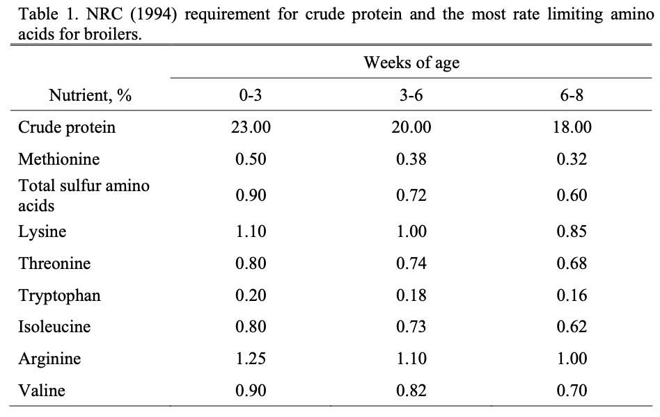

| Diet | n (Day 0) | n (Day 21) | % Dropout |
|---|---|---|---|
| 1 | 20 | 16 | 20 |
| 2 | 10 | 10 | 0 |
| 3 | 10 | 10 | 0 |
| 4 | 10 | 9 | 10 |
Table 1. Overview of dataset showing day 0 and day 21 sample sizes per diet and percent dropout.
ChickWeight dataset
The ChickWeight dataset is a built-in dataset in R that contains weight measurements of chicks on different diets over a period of time. The dataset includes the following variables:
weight (numeric): The weight of the chick (in grams).Time (numeric): The time (in days) since the chick was hatched when the measurement was made.Chick (ordinal): A unique identifier for each chick (between 18 and 48). The ordering of the levels groups chicks on the same diet together and orders them according to their final weight (lightest to heaviest) within diet.Diet (categorical): The diet type (1, 2, 3, or 4) assigned to the chick.The data were collected from an experiment conducted by the Department of Agriculture in the 1930s to study the effects of different diets on the growth of chicks (Crowder and Hand 1990). The specific composition of each diet was:
Diet 1: normal corn diet (control)
Diet 2: corn diet with 10% protein
Diet 3: corn diet with 20% protein
Diet 4: corn diet with 40% protein
Each chick was weighed at birth, every two days thereafter until day 20, and once more on day 21 (up to 12 time points). There are a total of 578 observations in the dataset representing 50 chicks on four different diets.
The dataset can be accessed directly in R using the command ChickWeight. More information about the dataset and a codebook can be found in the R documentation.
The goal of this analysis is to explore the growth patterns of chicks on different diets over time and to determine if there are significant differences in weight gain among the diets.
The intended audience for this analysis is broad and includes students, researchers, and professionals in the fields of animal science, veterinary medicine, nutrition, and animal husbandry who may be interested in understanding the effects of diet composition on early growth in poultry.
In case you were wondering, I, an adult cancer surgeon, have learned way more than any human who doesn’t work regularly with livestock needs to know about poultry feed in a very short period of time through this activity. Apologies in advance if the the nomenclature used in the following analysis is inaccurate to the field.
| Diet | n (Day 0) | n (Day 21) | % Dropout |
|---|---|---|---|
| 1 | 20 | 16 | 20 |
| 2 | 10 | 10 | 0 |
| 3 | 10 | 10 | 0 |
| 4 | 10 | 9 | 10 |
Table 1. Overview of dataset showing day 0 and day 21 sample sizes per diet and percent dropout.
| Diet | Avg. Weight (Day 0, g) | Avg. Weight (Last Measured, g) | Avg. Weight Gain (g) |
|---|---|---|---|
| 1 | 41.4 | 156.3 | 114.9 |
| 2 | 40.7 | 214.7 | 174.0 |
| 3 | 40.8 | 270.3 | 229.5 |
| 4 | 41.0 | 229.3 | 188.3 |
Table 2. Descriptive statistics of average weight gained by diet over the study period (day 0 to last measured day).
| Diet | Est. Growth Rate (g/day) | S.E. | t-value | 95% CI Low | 95% CI High | Bonferroni p-value | |
|---|---|---|---|---|---|---|---|
| 1 | 6.842 | 0.329 | 20.822 | 6.194 | 7.489 | 9.81e-54 | *** |
| 2 | 8.609 | 0.557 | 15.449 | 7.506 | 9.713 | 4.04e-30 | *** |
| 3 | 11.423 | 0.515 | 22.181 | 10.403 | 12.443 | 6.56e-44 | *** |
| 4 | 9.714 | 0.290 | 33.454 | 9.139 | 10.290 | 2.04e-61 | *** |
Table 3. Linear regression analysis of weight vs time per diet showing estimated growth rates (g/day) with 95% confidence intervals and Bonferroni-adjusted p-values.


In summary, this was an analysis of the ChickWeight dataset, which measured the weights of chicks on four different diets at 12 timepoints from birth until day 21: control corn diet (1), diet with 10% protein replacement (2), diet with 20% protein replacement (3), and diet with 40% protein replacement (4) (Crowder and Hand 1990).
Figure 3 demonstrates serial boxplots of the weight distribution of the chicks in each diet. At baseline (day 0), the average starting weights among all four groups are similar. Until day 14, the chicks on diet 4 appeared to have a higher absolute weight gain. After day 14, the average weight of the chicks on diet 3 surpassed that of the chicks on diet 4. This was supported by the calculations of absolute average weight gain between study start and the last measured weights, with diet 3 associated with the greatest average total weight gain (229.5 g) over the study period (Table 2). Linear regression analysis (Table 3) revealed that diet 3 (20% protein) had the highest estimated growth rate (11.4 g/day) among the diets, followed by diet 4 (40% protein), diet 2 (10% protein), and finally diet 1 (control). All experimental diets showed statistically significant higher weight gain rates compared to the control diet after Bonferroni correction (Table 3).
Notably, diet 1 had the highest dropout rate (20%) by day 21, followed by a 10% dropout rate in diet 4, while diets 2 and 3 had no dropout over the study period (Table 1). The information available about the dataset is not detailed enough to hypothesize why this may be the case, however in Figure 2, several very low weight outliers are observed in diet 1 preceding subsequent dropout, suggesting that poor growth may have contributed to chick attrition. There is no clear explanation for the single dropout (n=1) observed in data 4.
The findings of this analysis is consistent with current guidelines recommending 23% crude protein in chick feeds for age 0-3 weeks (National Research Council (1994)):

In addition, formulations of commercial chick starter feeds contain around 18-20% crude protein (see margin).

Since the original experiment performed in 1930 (from which the ChickWeight dataset is derived) and the peer-reviewed research (published between 1947-1991) incorporated into the NRC’s Nutrient Requirements of Poultry (1994), present-day broiler chicks are “very different from birds available prior to 1991, due in part to genetic selection as well as management practice and feed-related changes” (Applegate and Angel 2008).
Thus, current nutritional requirements may differ from those observed in this dataset and also from those recommended by the NRC. The NRC has since convened to update their recommendations with a 10th edition expected to be published in the future.
dplyr and tidyr:
count(), group_by(), mutate(), ungroup(), filter(), distinct(), summarise(), arrange(), pivot_wider(), select(), nest(), map(), unnest()
ggplot2:
ggplot(), aes(), geom_col(), scale_x_continuous(), geom_line(), scale_y_continuous(), labs(), geom_point(), geom_smooth(), geom_boxplot(), facet_wrap(), geom_errorbar()